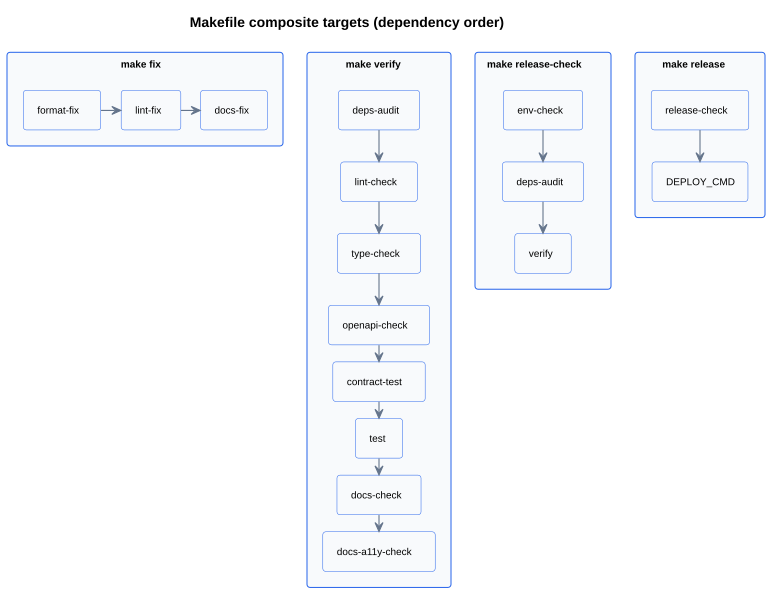
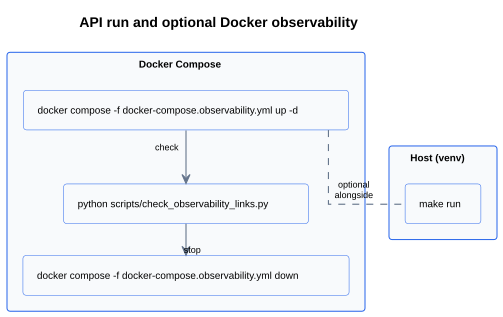

Make commands and workflows (onboarding)
Make targets by topic, how composites chain, and simple if → then flows. Naming rules: ADR 0008.
Overview
Targets grouped by job, diagrams for composites, and if → then rows for common tasks. Full list:
make help. Policy: ADR 0008.
Recommended entry points (start here)
Most days you only need one of these. They wrap the same atomic targets (format, lint, tests, OpenAPI, docs) in different orders and with different final doc steps.
| Command | Use when | Outcome |
|---|---|---|
make fix |
You want quick auto-fixes before committing. | format-fix → lint-fix → docs-fix |
make verify |
Local “full gate” and you are okay regenerating docs on disk. | lint-check → type-check → openapi-check →
contract-test → test → docs-fix
|
make verify-ci |
Before push: match supply-chain and doc-sync expectations with CI. | deps-audit → lint-check → type-check → openapi-check
→ contract-test → test → docs-check |
make release-check |
Pre-release or deploy rehearsal. | env-check → deps-audit → lint-check → type-check →
openapi-check → contract-test → test → docs-fix
|
make release DEPLOY_CMD='…' |
Deploy only after the full gate. | release-check → your shell command |
Composite pipelines (diagram)
Diagram below shows how composite targets depend on each other. Arrows show order.

Run and observability (diagram)
Daily dev is usually make run. Use run-project when you want Compose + API in one
flow (requires Docker).

Details and ports: Local development. Load testing: API load testing.
Commands by theme (reference)
Atomic targets you can run alone; composite targets are in section Composite pipelines.
Environment and dependencies
| Target | Role |
|---|---|
venv, install, requirements |
Create env, install pins, or freeze requirements.txt from .venv. |
env-init |
Copy env/example to .env once. |
env-check |
Quick sanity: venv, .env, config load, DB path. |
deps-audit |
OSV scan of pinned requirements (see ADR 0019). |
Application and database
| Target | Role |
|---|---|
run |
Uvicorn with reload, reads .env. |
container-start |
Same entrypoint as the image: migrate, then Uvicorn (no reload). |
migrate, migration name=… |
Apply or generate Alembic revisions. |
run-loadtest-api, run-loadtest-api-serve |
Load-test helper (scripted run vs long-running server for a second terminal). |
Code quality and contracts
| Target | Role |
|---|---|
format-fix / format-check |
Ruff format. |
lint-fix / lint-check |
Ruff lint. |
type-check |
mypy on app, tests, scripts. |
dead-code-check |
Vulture (optional; not in default PR gate; see ADR 0014). |
openapi-check |
Governance lint + breaking-change guard vs baseline. |
contract-test |
Full JSON equality of generated OpenAPI vs openapi-baseline.json. |
openapi-accept-changes |
Refresh baseline after intentional API changes (commit the file). |
Tests
| Target | Role |
|---|---|
test |
Full pytest run (coverage per pyproject.toml). |
test-one path=… |
Single file or node. |
test-warnings |
Pytest with warning summary for investigation. |
Documentation and changelog helpers
| Target | Role |
|---|---|
docs-fix, docs-check, uml-check, api-docs |
Docs pipeline, drift check, UML-only check, pdoc-only refresh (see Documentation pipeline). |
changelog-draft, llm-ping |
Optional LLM draft and API key smoke test (ADR 0013). |
Observability, logging, container
| Target | Role |
|---|---|
observability-up, observability-down, observability-smoke |
Prometheus/Grafana stack and link checks. |
logging-up, logging-down, logging-reset, logging-smoke, logging-es-query |
Optional Elasticsearch + Kibana + Filebeat for local NDJSON search
(docker-compose.logging.yml); QUERY=<uuid> for CLI search. See ADR 0023. |
docker-build |
Build study-app-api:local (see Docker image and container). |
Git hooks
| Target | Role |
|---|---|
pre-commit-install, pre-commit-check |
Install or run all hooks on the tree. |
If → then (scenarios)
| If you… | Then… |
|---|---|
| Just cloned the repo | make venv && make install && make env-init, edit .env,
make migrate,
make run
|
| Want auto-fixes before commit | make fix |
| Want full local gate and regenerated docs | make verify |
| Are about to push and need doc sync + audit like CI | make verify-ci |
| Changed the API intentionally | Review, make openapi-accept-changes, commit baseline, make verify or
make verify-ci
|
| Debug one test | make test-one path=tests/… |
| Run like production Docker entrypoint locally | make container-start |
| Need metrics dashboards locally | make run-project or make observability-up plus make run in another terminal |
| Want logs in Kibana / Elasticsearch locally | make logging-up, run the API with NDJSON to ./logs (default
LOG_FORMAT is json), create Kibana data view *study-app-logs* —
see Local development. |
| Prepare a release | make release-check; deploy with make release DEPLOY_CMD='…' |
Page history
| Date | Change | Author |
|---|---|---|
| Added Page history section (repository baseline). | Ivan Boyarkin |